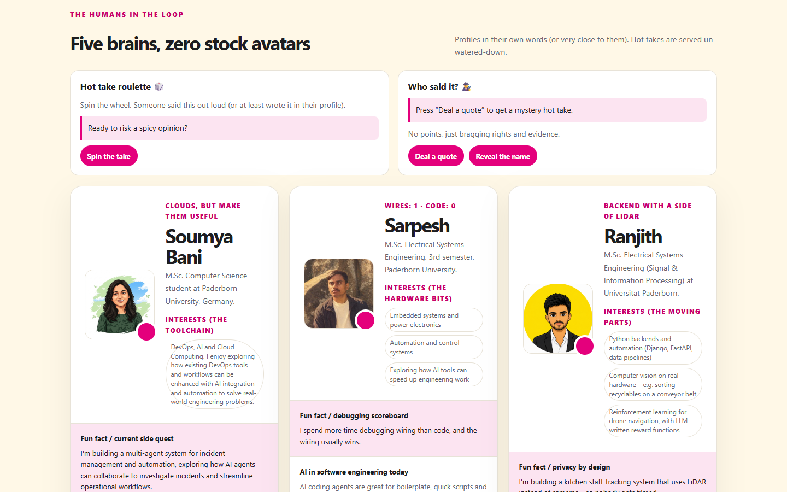
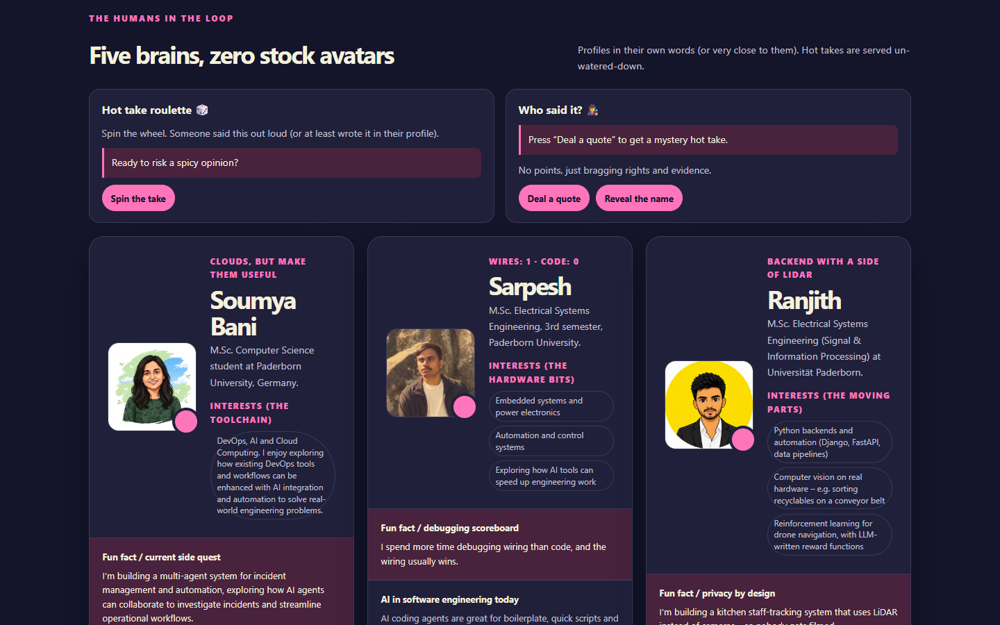
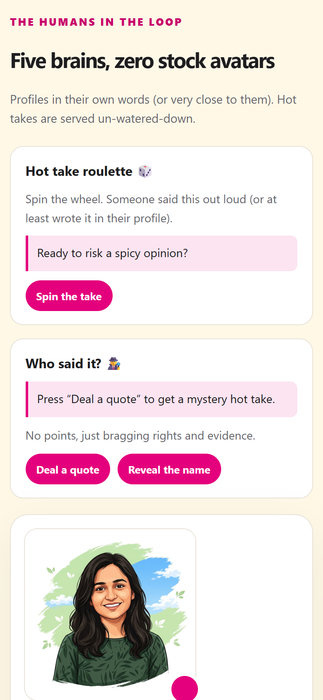
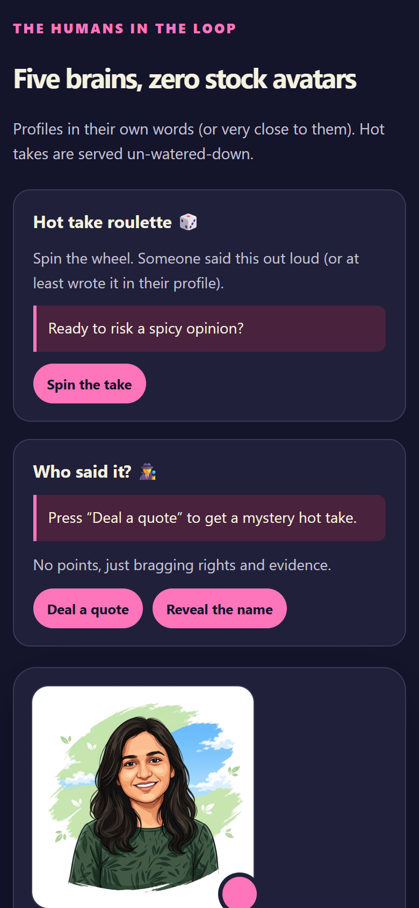
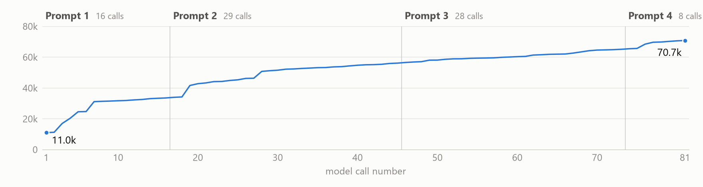
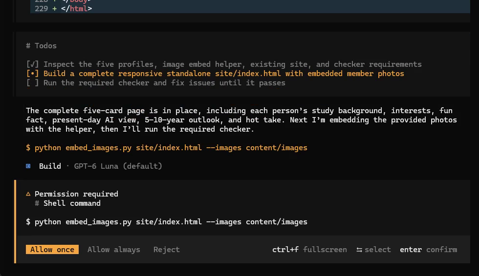
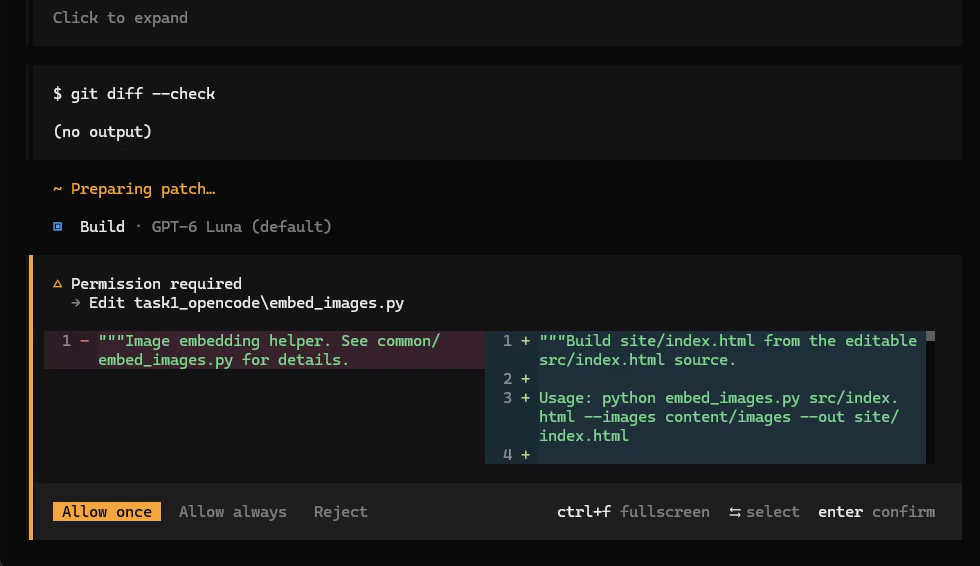
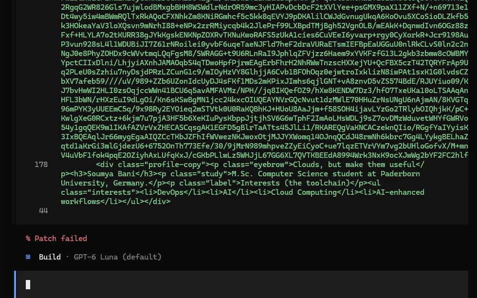
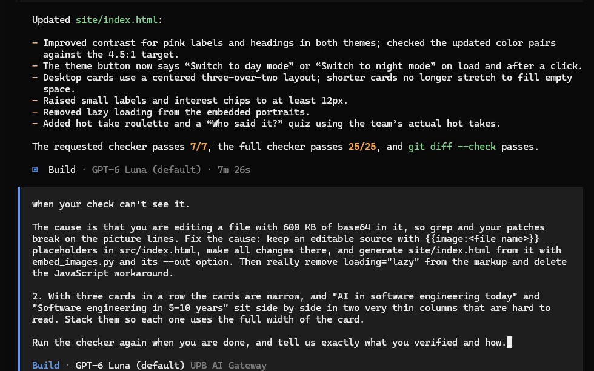
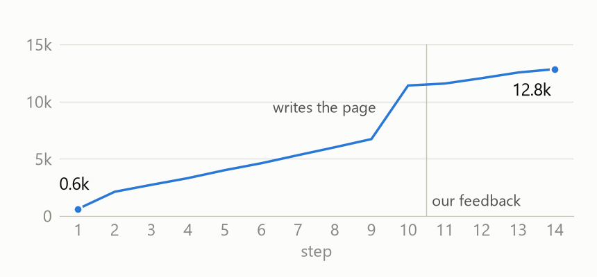

We wrote no HTML, CSS or JavaScript ourselves. OpenCode with GPT-6 Luna built it in two sessions, both exported.



members, each with picture and full profile
standalone file, 620 KB, nothing loaded from the internet
checks passed (check_site.py). Also on the page: our shared view on AI, a day/night switch, two small games
Every model call re-sends the whole conversation, so 71 thousand tokens became 4.1 million sent.

Session 02: 70,952 new input tokens, 4,036,054 cached, 22,824 output, 22,146 reasoning. Cached input costs a tenth of new input. · Session 01 (first version, one member): 2 prompts, 11 tool calls, [[s01_stats]].
The model only proposes. The agent program runs the edit or the command, and only after a yes.


embed_images.py, a script the course gave us

Cause. The pictures were embedded as base64 inside the file the agent kept editing: 600 KB.
What happened. Search failed three times, the patch failed, it added a JavaScript workaround, and its own check looked for the wrong text.
Our prompt. Keep a small source file with {{image:…}} placeholders and let the embed script build the page. Every later edit worked.
Plain Python, no framework. One JSON object per step. Our code runs the action and reports back.
The model noticed a rule it had not followed and decided to look up more. No pipeline told it to.
What we sent
OBSERVATION (step 11): Style guide results for "Required order of team member cards and rules for badges on member cards" (5 chunks): [SG-30] Member cards Status: ACTIVE (version 2) | Category: Components - Cards are ordered alphabetically by first name. … [SG-31] Hot take badge Status: ACTIVE | Category: Components - The badge is an element with the class `hot-take` inside the member card. - The text starts with the fire emoji 🔥. - Maximum text length: 140 characters …
What came back
{
"thought": "The cards are already
alphabetized, but the guide requires
the hot take to be a short,
fire-prefixed magenta badge. I'll
check how it defines the bio and
hot-take wording before revising
card content.",
"action": "search_style_guide",
"args": {
"query": "Bio writing requirements
for member cards and hot take
wording length limit and format"
}
}
What our code did
OBSERVATION (step 12)## headings, no overlap: a rule is never cut in half[SG-13] Night mode palette (version 2) · Status: ACTIVE, so the model sees if a rule is deprecated| If the model … | … our code |
|---|---|
| sends broken JSON or an unknown action | sends the error back as an observation. It counts as a step |
| writes base64 itself, or names a picture that does not exist | rejects it and saves nothing |
| repeats a search | answers "you already searched this" |
calls finish before the checks pass | rejects it and lists the failing checks |
| never finishes | stops the run after 25 steps per round |
In the final run none of these fired: 14 steps, 0 protocol errors.

Each search adds about 600 tokens and everything is sent again. We keep only the newest page in the history. At 100 steps we would also have to summarise old search results.
✗ round 1 passed 25 of 25, but: no bio, and the badge has no fire emoji
<div class="hot-take"><strong>Hot take</strong> AI is making us lose our edge: …</div>
✓ after our feedback it searched SG-30, SG-31 and SG-08, then fixed both
<p class="bio">Namit is a fifth-semester M.Sc. Computer Science student who … (91 words)</p> <div class="hot-take">🔥 AI is making us lose our edge: …</div>
Why: the checker only tests that a badge exists. The agent never searched for these two rules, so it did not know them. It only knows what it retrieved.